梨の木地蔵/新潟県真野町
草木もなびく佐渡である。
この日本海に浮かぶ日本で最大の島は古くから流刑地であり、北前船の寄港地でもあるため上方文化がダイレクトに入り込んで来た。
そのため対岸の新潟とは全く違う独自の文化を育んで来た。
・・・とガイドに書いてあったんできっとそうなんでしょう。
ま、それはそれとして確かに佐渡ヶ島には独特のノリがある。
例えば観光地のロボット化。
佐渡金山、歴史館、能楽の里など各主要観光施設の展示はロボットが動いているのだ。
佐渡の名物、朱鷺も勿論ロボ化されている。
これはもしかしたら寺などにもロボ化の波が押し寄せていてロボット仏像がいたりして、全部の手が動く千手観音とかボタン一つで立ち上がる大仏とか二足歩行可能の観音様とかあるのでは・・・と淡い期待をよせたりもしたが、そこまで仏教は腐っちゃいませんでした。
いや。別に腐ってても良かったんですけど。ってゆうかどちらかというと腐ってて欲しかったんですけど・・・
まあ、ロボ化はされてなかったが、佐渡には独自の信仰形態というか宗教ノリがある。
最も顕著なのが地蔵信仰ではなかろうか。
佐渡では多くの石仏を見かけたがその多くが路傍の祠に入った地蔵だった。
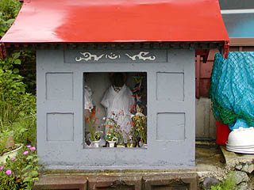 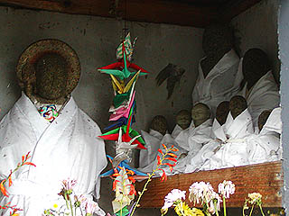
しかもそのうちの幾つかは白装束を身に付けた石像だったのだ。
この白装束の地蔵さんはかなり強烈なインパクトがあった。
さて
マクラが長くなってしまったが、そのような地蔵天国、佐渡において最もインパクトのある地蔵霊場がある。
真野町にある梨の木地蔵である。
折からの豪雨と相まってとても寺巡りという雰囲気ではないのだが、佐渡には寺巡りしに来たのでこのまま魚食って金山見て帰る訳にもいかず取り敢えず行ってみた・・・
比較的標高が高いためか霧まで立ちこめていた。その濃い霧の中を歩いていくと白装束のお地蔵さんが見えて来た。
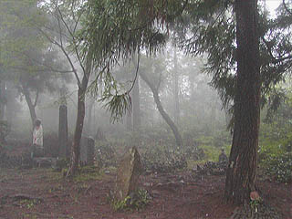
白装束のお地蔵さんを目印に近付いて行くと・・・
うぎゃ！
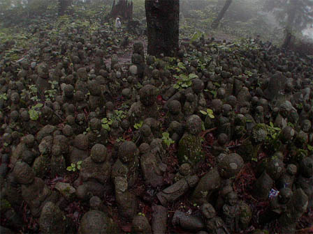
地面がぜ〜んぶお地蔵さんだった！
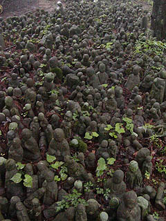
コレは決してキノコではありません。全部石のお地蔵さんなのだ。
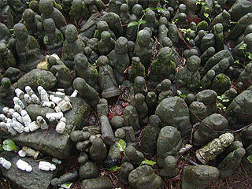 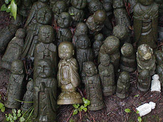
大きさは10センチから50センチ位のモノがほとんど。古いものは最初からそうであったのか、顔が摩滅していてコケシみたいになっている。
新しいものは大量生産品なのだろう、同じような形のお地蔵さんが大量に奉納されている。
奉納されているというか、まるで増殖して地面から生えて来ているかのようだ。
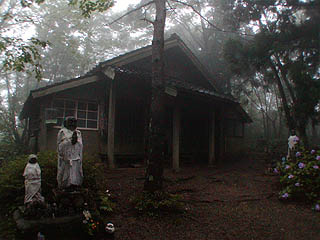
奥には一軒の建物が建っている。
ここには漁師が海中より拾い上げたという本尊のお地蔵さんが祭られているという。
このお地蔵さんが子供の病気平癒に御利益があるらしく、願いが叶うと身替わり地蔵として一体を奉納していくというシステムになっているのだ。
つまり、境内に広がる無数の地蔵はここの本尊のお地蔵さんが治して来た数、ということになる。
物凄い名医じゃあないですか！お地蔵さん。
ちなみにお堂の中にも無数のお地蔵さんがあるらしいのだが、外から見る限りよくわかりませんでした。
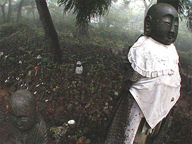 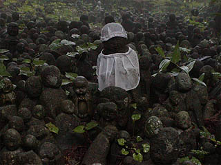
それにしても霧にけむる無数の地蔵。
雰囲気ありすぎですね。
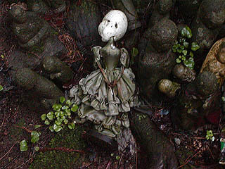
中にはお地蔵さんの代わりにフランソワなお人形さんなども奉納されていたりしたが何故かヘッドが発泡スチロール。
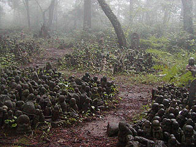
お地蔵さんの群れは幾つかの集落を形成している。
一体、この風景が出来上がるまでに何年かかったのだろうか・・・
2003.7.
珍寺大道場 HOME